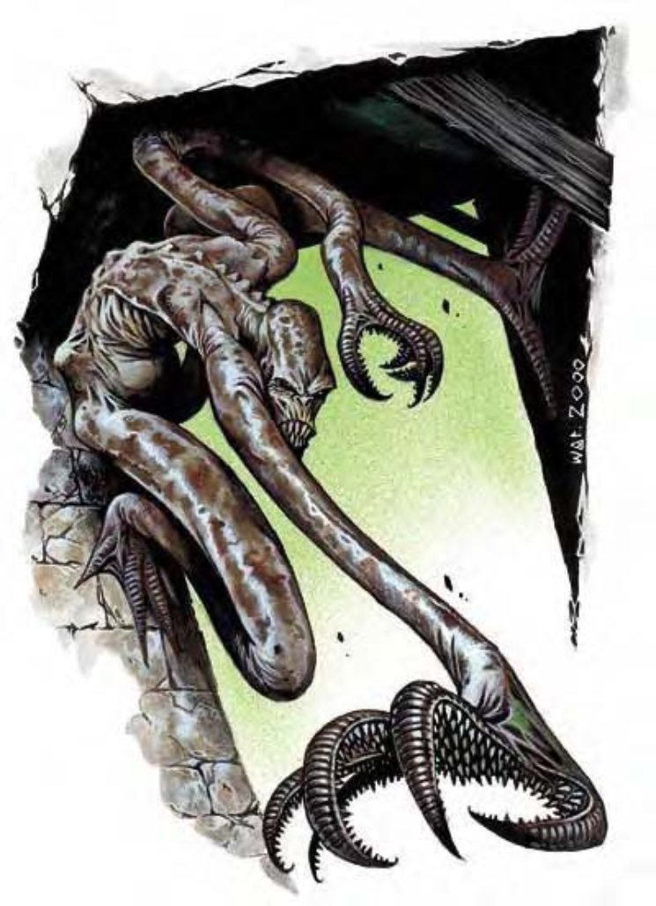

| 资料栏位 | 锁喉怪 (Choker) 小型异怪 |
|---|---|
| 生命骰 | 3d8+3 (16hp) |
| 先攻 | +6 |
| 速度 | 20英尺 (4格)，攀爬10英尺 |
| 防御等级 | 17 (+1体型，+2敏捷，+4天生)，接触13，措手不及15 |
| 基本攻击/擒抱 | +2/+5 |
| 攻击 | 触手+6近战 (1d3+3) |
| 全回合攻击 | 2触手+6近战 (1d3+3) |
| 占据/触及 | 5英尺/10英尺 |
| 特殊攻击 | 精通攫抓，紧勒 1d3+3 |
| 特殊能力 | 黑暗视觉60英尺，迅捷 |
| 豁免 | 强韧+2，反射+5，意志+4 |
| 属性 | 力量16，敏捷14，体质13，智力4，感知13，魅力7 |
| 技能 | 攀爬+13，躲藏+10，潜行+6 |
| 专长 | 精通先攻B，闪电反射，隐秘 |
| 区域 | 地底 |
| 组织 | 单独 |
| 挑战等级 | 2 |
| 宝藏 | 1/10钱币；50%商品；50%物品 |
| 阵营 | 通常混乱邪恶 |
| 进化 | 4-6HD (小型)；7-12HD (中型) |
| 等级调整 | - |
它栖息于房间角落顶部的阴影中。躯体像矮身的半身人，皮肤长满斑点，四肢惊人地细长。该生物发出嘶嘶声，露出尖锐的牙齿，随即鞭子似地甩出四肢攻击。
这些邪恶的小型掠食者潜伏在地底，抓住任何碰巧从眼前经过的猎物。锁喉怪的头部、背脊和胸部则瘦露出骨头，但四肢如触手般有着多重软骨关节。也因此，其四肢略显弓形，移动有独特的流畅性。它的手脚长有带刺的肉垫，使其几乎能够抓住任何表面。它的体重约有35磅。锁喉怪说地底通用语。
战斗锁喉怪喜欢躲在天花板，通常是在房梁交接处、拱门、水井或坏死楼梯附近，由上下而攻击它的猎物。锁喉怪几乎能够攻击任何体型的生物，但它比较喜欢攻击相似体型或更大一等级的落单猎物。若是在极为饥饿的情况下，它可能攻击一群生物，但会等着抓取排在队伍最后的那个。
锁喉怪非常贪婪。脑筋快的冒险者若事先发现锁喉怪，可尝试在其攻击前以食物贿赂，打听附近的消息。
紧勒 (Constrict, Ex)：锁喉怪在对付大型或更小的生物时，一旦通过擒抱检定，就可造成1d3+3的伤害。由于它抓住了受害者的脖子，因此被锁喉怪抓住的生物既无法说话，也不能施展含有言语成分的法术。
精通攫抓 (Improved Grab, Ex)：要使用此能力，锁喉怪必须先用它的触手攻击命中一个体型为大型或更小的生物。之后它可以一个即时动作来通过擒抱而不引发借机攻击。如果通过擒抱检定，它可以进行定身并可以紧勒。
迅捷 (Quickness, Su)：虽然并非特别敏捷，锁喉怪的动作异乎寻常的快速。它在每轮都可以进行一个额外的标准或是移动动作。
技能：锁喉怪在攀爬检定上有+8种族加值并总是可以选择取10，即使是在匆忙或是被威胁的情况下。